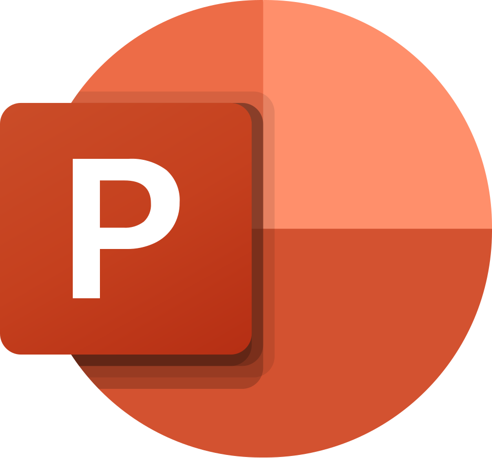

Fortalecimiento de competencias digitales
INCATEPROF

Microsoft PowerPoint es una herramienta ofimática utilizada para crear presentaciones digitales mediante diapositivas. Permite organizar información, integrar imágenes, textos y elementos visuales para comunicar contenidos educativos y administrativos de manera clara y atractiva.
Los docentes pueden utilizar PowerPoint para presentar contenidos, explicar temas, desarrollar clases y crear materiales de apoyo visual para los participantes.
Elabore una presentación de tres diapositivas considerando:
Puede complementar el aprendizaje mediante videos tutoriales y ejemplos prácticos sobre la creación de presentaciones digitales.